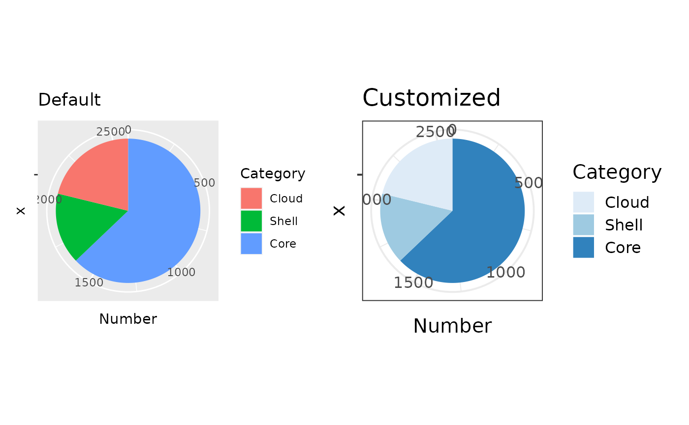
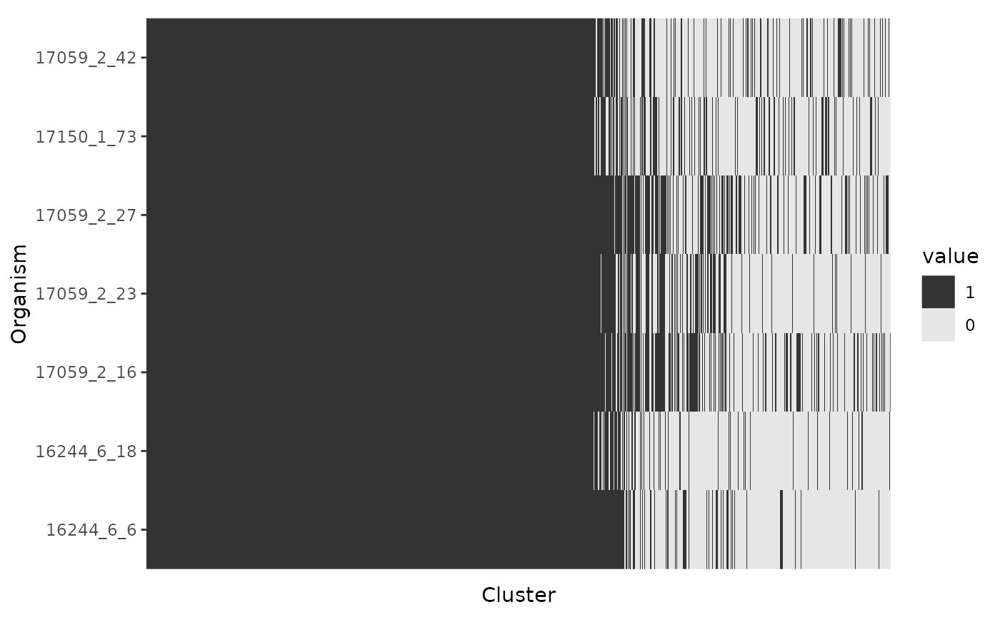
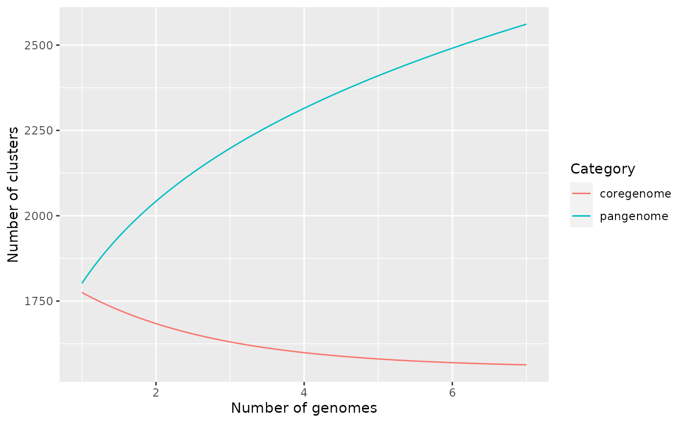

We implemented pagoo to provide basic but fundamental statistical analyses and visualizations out-of-the-box. Some of them are just wrappers of other packages functions (see vegan and micropan R packages; cite them also if you use pagoo), and graphics are made by ggplot2 and plotly packages. All these are very useful for initial data exploration, but also provide a lot of flexibility to interact with other R packages in order to make more complex plots and more robust analyses. Also an interactive Shiny App can be easily deployed with a single function call, useful specially for those users that not very used to work with R code and prefer a UI, but also powerful for experienced users since it gives a general view of the data.
All this methods are embebbed to the pagoo object, so is very easy to start working with pangenome data.
Start by loading the example dataset.
library(pagoo) # Load package
toy_rds <- system.file('extdata', 'campylobacter.RDS', package = 'pagoo')
p <- load_pangenomeRDS(toy_rds)As you may have already noted, methods and visualization are different than data fields (see previous tutorials) in the way of calling them. As any R function, you must use parentheses to run them.
Statistical methods
In this tutorial some, but not all, methods will be covered. Once you get the idea, just browse the documentation to see other available methods and what arguments they take.
Gene Abundance Distance
Pairwise distances between gene abundance can be retrieved by using $dist() method. By default, Bray-Curtis distance is computed. This is just a wrapper of vegdist() from vegan package.
p$dist()## 16244_6_6 16244_6_18 17059_2_16 17059_2_23 17059_2_27 17150_1_73
## 16244_6_18 0.06594656
## 17059_2_16 0.12122816 0.12500000
## 17059_2_23 0.09622745 0.09632517 0.07632399
## 17059_2_27 0.09245937 0.11310008 0.10311629 0.08230990
## 17150_1_73 0.08203991 0.09034444 0.13624408 0.12275937 0.12999735
## 17059_2_42 0.08920705 0.09927089 0.14532148 0.12682137 0.13706919 0.09518600Other distances available include, for instance, Jaccard distance (see documentation). As this method require presence/absence data, and not abundance, you should use it with binary = TRUE argument set.
p$dist(method = "jaccard", binary = TRUE)Principal Component Analysis
A method to compute prcomp (stats package) over the panmatrix is provided. You can use generic functions to further analyze the results.
pca <- p$pan_pca()
summary(pca)## Importance of components:
## PC1 PC2 PC3 PC4 PC5 PC6 PC7
## Standard deviation 8.1626 6.1103 5.5458 5.2924 4.6981 4.29398 2.779e-14
## Proportion of Variance 0.3278 0.1837 0.1513 0.1378 0.1086 0.09072 0.000e+00
## Cumulative Proportion 0.3278 0.5115 0.6629 0.8007 0.9093 1.00000 1.000e+00Visualization methods
pagoo uses ggplot2 package to produce customizable visualizations. While is not necessary to load ggplot2 to plot pangenome data, is better since you can fully customize them. Also we will be using patchwork to arrange plots in some cases to show, side by side, the default plot and a customized one.
Summary Pie Chart
The most basic plot is a pie chart to show core, shell, and cloud genome proportions.
# Basic
pie1 <- p$gg_pie() + ggtitle("Default")
# Customize with ggplot2
pie2 <- pie1 +
ggtitle("Customized") +
theme_bw(base_size = 15) +
scale_fill_brewer(palette = "Blues")
# Arrange (patchwork) and plot
pie1 + pie2
Gene Frequency BarPlot
Frequency barplots are one of the basic plots in pangenomics. They show how many clusters are in only 1 genome, how many in 2 genomes, ..and so on, until showing how many clusters are in all genomes (i.e. they are part of the coregenome).
p$gg_barplot()
Gene Presence/Absence BinMap
A binary map show gene presence/absence patterns per genome. Each column is a cluster of orthologous genes, and each row an organism. The columns (clusters) are sorted by column sums, so core genes appear to the left, cloud genes to the right, and shell genes in the middle. This plot is useful, for example, to identify strains with abnormal accessory gene patterns which can represent true biological signatures like the presence of extrachromosomal elements or artifacts product of contamination during sequencing.
p$gg_binmap()
Rarefaction Curves
Pangenome curves typically illustrate the number of gene clusters that are subsequently discovered as more genomes are added to the dataset. If the pangenome is open, more and more accessory genes will be discovered as new genomes are added to the analysis and the size of the core genome will tend to decrease. pagoo applies the the Power-law distribution to fit the pangenome size and the Exponential decay function to fit the core genome size.
Rarefaction curves are computed by first performing permutations with $rarefact(), and then fitting a Power Law to pangenome counts, and an Exponential Decay Law to coregenome counts. The latter two operations are done by using $pg_power_law_fit() and $cg_exp_decay_fit() methods, respectively (see documentation for more details). $gg_curves() combines this methods to facilitate plotting.
p$gg_curves()
You can add points and facet data by category, and add any other customization:
p$gg_curves() +
ggtitle("Pangenome and Coregenome curves") +
geom_point() +
facet_wrap(~Category, scales = 'free_y') +
theme_bw(base_size = 15) +
scale_color_brewer(palette = "Accent")
PCA Biplot
A biplot for visualizing the first 2 principal components in a PCA is always useful at early stages of analysis to explore possible association of genomes based on gene content. This method uses $pan_pca() method to perform the PCA, and allows you to use organism metadata to color the points.
p$organisms## DataFrame with 7 rows and 8 columns
## org id strain year country host
## <factor> <character> <character> <integer> <character> <character>
## 1 16244_6_6 FR15 2008/170h 2008 France Human
## 2 16244_6_18 FR27 2012/185h 2012 France Human
## 3 17059_2_16 AR1 99/801 1999 Argentina Bovine
## 4 17059_2_23 AR8 04/875 2004 Argentina Bovine
## 5 17059_2_27 AR12 06/195 2006 Argentina Bovine
## 6 17150_1_73 CA1 001A-0374 2005 Canada Human
## 7 17059_2_42 TW6 1830 2008 Taiwan Human
## source accession
## <character> <character>
## 1 Feces ERS672247
## 2 Blood ERS672259
## 3 Prepuce ERS739235
## 4 Fetus ERS739242
## 5 VM ERS739246
## 6 Blood ERS686652
## 7 Blood ERS739261Since we have metadata associated to each organism, we will use it to color the organisms according to the country variable.
p$gg_pca(colour = 'host', size = 4) +
theme_bw(base_size = 15) +
scale_color_brewer(palette = "Set2")Shiny App
Last but not least, you can deploy a local shiny app by just one line of code.
p$runShinyApp()You can explore an online example of pagoo shiny app for a complete set of 69 Campylobacter fetus genomes at the following url: https://microgenlab.shinyapps.io/pagoo_campylobacter/ . This method is currently not intended for very large and complex datasets, as it may render slow. To work with big pangenomes we recommend the use of the R command line, but for tens or few hundred of genomes it works fairly good if you have patience.